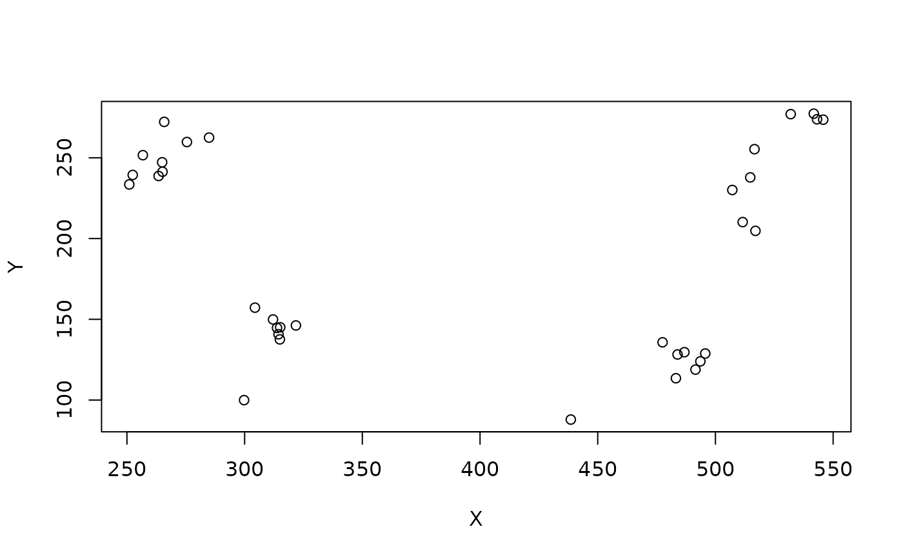

mcns_somapos returns the XYZ location (in nm, microns or
raw voxel space) of the soma position for neurons. When no valid soma
position is available, then a NA value is returned.
Arguments
- ids
A set of bodyids or a dataframe containing the
nameandsomaLocationfields- method
Whether to use the side recorded in the instance field, the soma position or each of those in turn to predict. The method manual returns manually curated soma sides recorded via Clio (see details).
- units
For
mcns_somaposthe units of returned 3D positions. Defaults to nm.
Value
For mcns_soma_side a vector of sides (L, R, M, U or NA).
Midline or unpaired neurons should be indicated with an M although I have
seen U in the past.
Details
the recorded somaSide column in neuPrint / soma_side
in clio should be preferred but is not always available.
method='auto' will prefer those columns but then cascade through
instance and somaLocation to define the rest.
See also
Other annotations:
mcns_body_annotations(),
mcns_dvid_annotations(),
mcns_neuprint_meta()
Examples
# \donttest{
mcns_soma_side('/LAL04.*')
#> [1] "R" "L" "L" "R" "R" "L" "R" "L" "L" "L" "R" "R" "L" "L" "R" "R" "L" "R"
# }
if (FALSE) {
# All neurons with a type
table(mcns_soma_side('/.*'), useNA='if')
# compare manual with predictions
mcnswsoma=mcns_body_annotations(query=list(soma_side="exists/1"))
mcnswsoma$pside=mcns_soma_side(mcnswsoma$bodyid)
with(mcnswsoma, table(soma_side, pside))
# compare manual with instance
mcnswsoma=mcns_body_annotations(query=list(soma_side="exists/1"))
mcnswsoma$iside=mcns_soma_side(mcnswsoma$bodyid, method='instance')
with(mcnswsoma, table(soma_side, iside, useNA = 'i'))
# converse: compare instance with manual
mcns_instance=mcns_neuprint_meta('/name:.+')
if(!"somaSide" %in% colnames(mcns_instance))
mcns_instance$somaSide=mcns_soma_side(mcns_instance, method='manual')
mcns_instance$iside=mcns_soma_side(mcns_instance, method='instance')
# many mismatches e.g. due to neurons without a soma including truncated
# sensory neurons, ascending neurons etc
with(mcns_instance, table(somaSide, iside, useNA = 'i'))
# we can parse that a bit by doing
mcns_instance %>% filter(soma) %>% with(table(somaSide, iside, useNA = 'i'))
}
sp=mcns_somapos('/LAL04.*', units='um')
plot(sp[,1:2])
